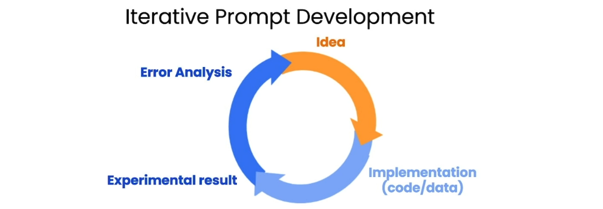

你听说过人工智能可以像人一样聊天吗？不，我不是在跟你开玩笑。这就是大型语言模型（Large
langauge model,
LLM）所能实现的事情！它们是一种新型的人工智能技术，可以通过学习大量的文本数据，来理解人类语言的复杂性和变化性。最近，一种名为ChatGPT的大型语言模型正引领着一场新的范式革命。ChatGPT不仅可以像人一样回答你的问题，还能够进行有趣的闲聊，甚至写作文本。它的出现将彻底改变我们与人工智能的互动方式。在本文中，我们会介绍如何有效地对大型语言模型进行提问（Prompt
Engineering, 提示工程），以获得你想要的信息。
一、提问原则（Principles）
进行有效的提问，我们要先明确几个原则：
1.
写出清晰明确的指导（Write clear and specific instructions）。
-
使用分隔符（Use delimiters），如"""（triple quote）、'''（triple
backticks）、---（triple dashes）等；
1
例子：Summarize the text delimited by triple backticks into a single sentence. ```{text}```
1
例子：Generate a list of three made-up book titles along with their authors and genres. Provide them in JSON format with the following keys: book_id, title, author, genre. <br>
1
2
3
4
5
6
7例子：You will be provided with text delimited by triple quotes. If it contains a sequence of instructions, re-write those instructions in the following format:
Step 1 - ...
Step 2 - …
…
Step N - …
If the text does not contain a sequence of instructions, then simply write "No steps provided."
"""{text_1}"""
1
2
3
4例子：Your task is to answer in a consistent style.
<child>: Teach me about patience.
<grandparent>: The river that carves the deepest valley flows from a modest spring; the grandest symphony originates from a single note; the most intricate tapestry begins with a solitary thread.
<child>: Teach me about resilience.
- 将负责的任务分解成模型好理解的任务（Specify the steps
required to complete a task）； 1
2
3
4
5
6
7
8
9
10
11例子：prompt_1 = f"""
Perform the following actions:
1 - Summarize the following text delimited by triple backticks with 1 sentence.
2 - Translate the summary into French.
3 - List each name in the French summary.
4 - Output a json object that contains the following keys: french_summary, num_names.
Separate your answers with line breaks.
Text:
"""{text}"""1
2
3
4
5
6
7
8
9
10
11
12
13
14
15
16
17
18
19
20
21
22
23
24
25
26
27
28
29
30
31
32
33
34
35
36
37
38
39
40
41
42
43
44
45prompt = f"""
Your task is to determine if the student's solution \
is correct or not.
To solve the problem do the following:
- First, work out your own solution to the problem.
- Then compare your solution to the student's solution \
and evaluate if the student's solution is correct or not.
Don't decide if the student's solution is correct until
you have done the problem yourself.
Use the following format:
Question:
"""question here"""
Student's solution:
"""student's solution here"""
Actual solution:
"""steps to work out the solution and your solution here"""
Is the student's solution the same as actual solution just calculated:
"""yes or no"""
Student grade:
"""correct or incorrect"""
Question:
"""
I'm building a solar power installation and I need help \
working out the financials.
- Land costs $100 / square foot
- I can buy solar panels for $250 / square foot
- I negotiated a contract for maintenance that will cost \
me a flat $100k per year, and an additional $10 / square \
foot
What is the total cost for the first year of operations \
as a function of the number of square feet.
"""
Student's solution:
"""
Let x be the size of the installation in square feet.
Costs:
1. Land cost: 100x
2. Solar panel cost: 250x
3. Maintenance cost: 100,000 + 100x
Total cost: 100x + 250x + 100,000 + 100x = 450x + 100,000
"""
Actual solution:
"""
二、提示的迭代开发（Iterative Development）
就算我们有了上述的一些提出prompt的技巧/原则，我们也很难保证我们提出的prompt就是最好的，甚至依然有可能是有问题的。通过如下图所示的迭代开发流程，我们可以提出更好的prompt。

例如:
-
对生成答案的长度不满意：use at most 50
words/sentences/characters.
- 对关注的点不满意：be technical in
nature and focus on the materials the product is
constructed from.
三、总结/提取提示（Summarizing/Extracting Prompt）
对文本的总结和对信息的提取是LLM模型很重要的应用场景。下面分别是简单总结和提取信息的例子：
1
2
3
4
5Your task is to generate a short summary of a product review from an ecommerce site to give feedback to the Shipping deparmtment.
Summarize the review below, delimited by triple backticks, in at most 30 words, and focusing on any aspects that mention shipping and delivery of the product.
Review: """{prod_review}"""1
2
3
4
5Your task is to extract relevant information from a product review from an ecommerce site to give feedback to the Shipping department.
From the review below, delimited by triple quotes extract the information relevant to shipping and delivery. Limit to 30 words.
Review: """{prod_review}"""
四、推理（Inference Prompt）
对文本进行总结/信息提取之后，我们自然也会感兴趣文本背后蕴含的信息，于是我们也可以让LLM模型对所得到的文本进行推理。例如，我们可以问LLM模型分析的文本的情感（Sentiment）是积极的还是消极的：
1
2
3
4
5
6What is the sentiment of the following product review,
which is delimited with triple backticks?
Give your answer as a single word, either "positive" or "negative".
Review text: '''{lamp_review}'''
1
2
3Identify a list of emotions that the writer of the following review is expressing. Include no more than five items in the list. Format your answer as a list of lower-case words separated by commas.
Review text: '''{lamp_review}'''
五、变换（Transforming Prompt）
除了总结推理，LLM模型另一个重要的应用：变换。变换包含很多种形式：翻译、语气、语法矫正等。可以用到的prompt比如：
翻译： 1
2Translate the following text to Spanish in both the formal and informal forms:
'Would you like to order a pillow?'1
2Translate the following from slang to a business letter:
'Dude, This is Joe, check out this spec on this standing lamp.'1
"Proofread and correct the following text. If you don't find and errors, just say "No errors found".
六、其他（Others）
除了这些应用，LLM模型还可以用于文本拓展（Expanding，如续写故事、协助头脑风暴等）或者构建聊天机器人（Chatbot，按照一定的设定回答问题）等。LLM的潜力很大程度上依赖于使用者的想象力。
七、局限性（Limitations）
此外，很重要的一点是我们也要清楚地意识到LLM模型也是有局限性的：幻觉（Hallucinations）。也就是说，它会产生一些听起来好像是对的但其实是错的回答。沿着上面我们使用LLM模型的技巧，我们可以使用以下方法尽量减少幻觉的产生：先自己找到相关的信息，再让LLM模型基于这些信息回答问题。
参考课程：ChatGPT Prompt Engineering for Developers - by Isa Fulford, Andrew Ng (https://www.deeplearning.ai/short-courses/chatgpt-prompt-engineering-for-developers/)